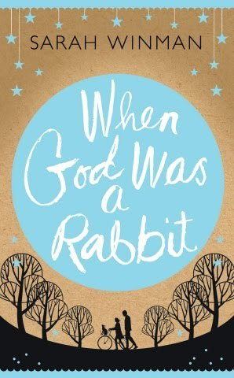

Tue, 03 May 2011 15:41:00 · books · reading
picked up a copy of when god was a rabbit at

Picked up a copy of When God Was a Rabbit at Kinokuniya Singapore the other day, and I must say it was the title that piqued my interest. I’ve never heard of the author, didn’t really know what the book was about, save for the short description on its back cover, and wasn’t sure what to expect. But after reading the first few paragraphs, I was hooked and surprised how hard it was to put it down once I started.
The book told a remarkably honest account of childhood and growing up, the loss of innocence, eccentricity, familial bonds and most of all about love and friendship. It sounds a bit wimpy, but I promise you it’s far from that.
“I divide my life in two parts. Not really a Before and After; it’s more as if they are bookends holding together flaccid years of empty musings, years of the late adolescent or the twentysomething whose coat of adulthood simply does not fit. Wandering years I waste no time in recalling…”
With an opening passage like that, who could resist reading it?